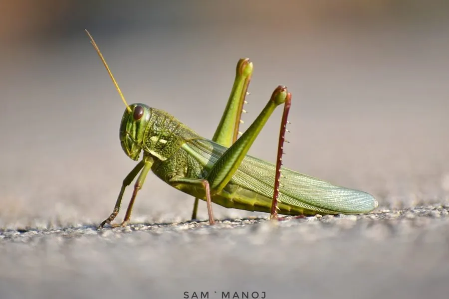

昆虫 · 动物界
棉蝗 Chondracris rosea

体型粗壮的大型蝗虫，体草绿带黄，后足腿节外侧有红斑、胫节鲜红，取食棉叶与甘蔗叶，中国南方常见。
- 分类
- 门节肢动物门纲昆虫纲目直翅目科蝗科属棉蝗属
- 栖息环境
- 棉田、甘蔗地、柑橘园、灌丛和路旁草丛
- 地理分布
- 中国南方与西南（广东、广西、福建、云南、贵州、台湾），以及东南亚和南亚
- 保护级别
- 尚无保护级别；为南方经济作物上的常见害虫
物种志
棉蝗的体长约六至九厘米，是体型粗壮的大型蝗虫，体色草绿至黄绿，头部较大，复眼后方有一条淡色纵纹，前胸背板呈屋脊状隆起，后足腿节粗壮，外侧有一块鲜红色的斑，胫节红色，胫节末端有发达的刺。它的前翅革质，长度超过腹部，后翅膜质，基部淡红。雌虫体型明显大于雄虫，腹部肥大，产卵器短。
它分布于中国南方和西南，包括广东、广西、福建、云南、贵州和台湾，以及东南亚和南亚，栖息在棉田、甘蔗地、柑橘园、灌丛和路旁的草丛，成虫和若虫都取食叶片，棉叶、甘蔗叶和柑橘嫩叶都在它的食谱上，严重时能把叶片啃得只剩主脉。它一年发生一代，以卵在土中越冬，卵块外包泡沫状的卵鞘，若虫孵化后分散取食，经数次蜕皮羽化。它是南方经济作物上的常见害虫，尚无保护级别，防治以人工捕杀、保护和利用天敌为主。
形态与习性
- 体长约六至九厘米，体型粗壮
- 体色草绿至黄绿，复眼后有淡色纵纹
- 后足腿节外侧有红斑，胫节鲜红带刺
- 食性取食棉叶、甘蔗叶、柑橘嫩叶
- 发生世代一年一代，以卵在土中越冬
- 防治人工捕杀、保护利用天敌
趣味知识
- 它后腿外侧那块红斑配着鲜红的胫节，在草丛里很扎眼。
- 它一顿能啃掉大半片棉叶，是棉田里最显眼的害虫。
- 雌虫产卵时把腹部插进土里，产下的卵块外裹一层泡沫鞘。